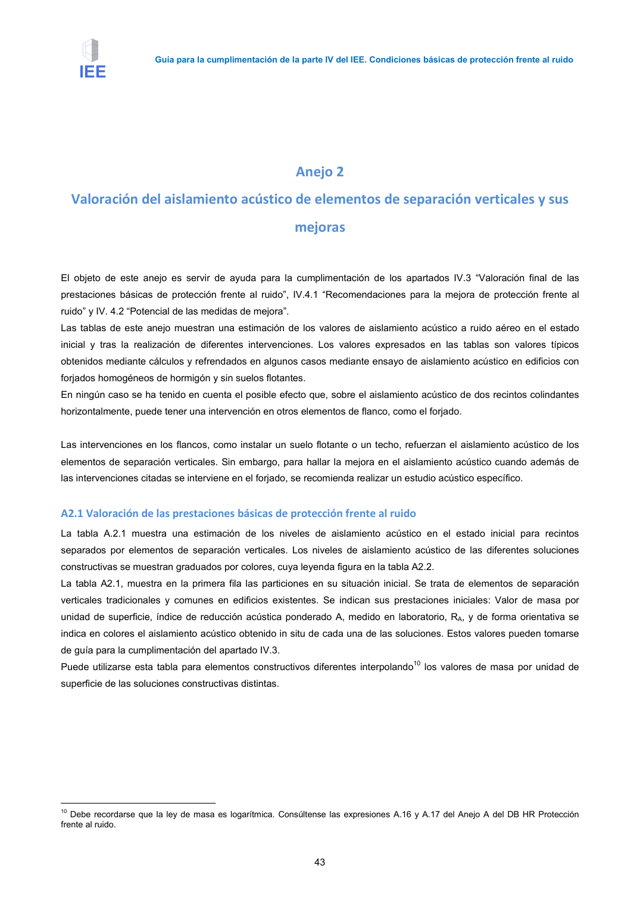

IEE 2016 · edición 2016-11-01 · capa guia
Documento GUIA-PDF-a5d4ef5252ba · SHA-256 del PDF 813669d3066c0ff79457d57b80b0512a4fbb248bc5db1f7baf473c369a064738
Página física 53 de 65.
Copia fiel del PDF fuente · Fuente oficial
Ficha de la disposición en la fuente oficial
Créditos y autoría en el PDF fuente. Reproducción con cita de fuente y autores.
Permiso literal: Se permite la reproducción del contenido total o parcial de esta Guía siempre y cuando se haga citando la fuente original.
Guía para la cumplimentación de la parte IV del IEE. Condiciones básicas de protección frente al ruido
Dirección y coordinación
Luis Vega Catalán
Mª Cristina Colomo Fernández
Eduardo González de Prado
Dirección General de Arquitectura, Vivienda y Suelo. Ministerio de Fomento
Mª Teresa Carrascal García
Instituto de Ciencias de la Construcción Eduardo Torroja. IETcc- CSIC
Autores
Mª Teresa Carrascal García
Amelia Romero Fernández
Mª Belén Casla Herguedas
Unidad de Calidad en la Construcción del Instituto de Ciencias de la Construcción Eduardo Torroja IETcc- CSIC
Se agradece la colaboración de
Belén Delgado Giménez
Fundación FIDAS
Alberto Esteban González
C.T.O. Estudios y proyectos – Gikesa
Giovanni Muzio
C.T.O. Estudios y proyectos
Francisco Labastida Azemar
Arquitecto, asesor CSCAE
Pedro F. Nogueira López
Universidad de A Coruña
Alejandro Sansegundo Sierra
Acústica SanSegundo
Esta Guía para la cumplimentación de la parte IV del IEE. Condiciones básicas de protección frente al ruido, nace en el marco del
convenio de colaboración llevado a cabo entre el Ministerio de Fomento y el Instituto de Ciencias de la Construcción Eduardo Torroja y
forma parte de la estrategia de este Ministerio de generar una serie de documentos de ayuda que faciliten la aplicación de la normativa
de la edificación y que en este caso concreto, ofrezca a los técnicos criterios para poder realizar una evaluación del estado inicial de las
edificaciones en lo referente a las condiciones acústicas de las viviendas existentes y plantear medidas que incrementen su confort
acústico.
En la redacción de este documento se ha utilizado algunos de los contenidos y de las figuras de la Guía de aplicación del DB HR
Protección frente al ruido. Dicha guía puede consultarse en:
http://www.codigotecnico.org/index.php/menu-documentos-complementarios/menu-guia-aplicacion-db-hr
Se permite la reproducción del contenido total o parcial de esta Guía siempre y cuando se haga citando la fuente original.
2Formato: Texto de la página (Markdown)
Guía para la cumplimentación de la parte IV del IEE. Condiciones básicas de protección frente al ruido
43
Anejo 2
Valoración del aislamiento acústico de elementos de separación verticales y sus
mejoras
El objeto de este anejo es servir de ayuda para la cumplimentación de los apartados IV.3 “Valoración final de las
prestaciones básicas de protección frente al ruido”, IV.4.1 “Recomendaciones para la mejora de protección frente al
ruido” y IV. 4.2 “Potencial de las medidas de mejora”.
Las tablas de este anejo muestran una estimación de los valores de aislamiento acústico a ruido aéreo en el estado
inicial y tras la realización de diferentes intervenciones. Los valores expresados en las tablas son valores típicos
obtenidos mediante cálculos y refrendados en algunos casos mediante ensayo de aislamiento acústico en edificios con
forjados homogéneos de hormigón y sin suelos flotantes.
En ningún caso se ha tenido en cuenta el posible efecto que, sobre el aislamiento acústico de dos recintos colindantes
horizontalmente, puede tener una intervención en otros elementos de flanco, como el forjado.
Las intervenciones en los flancos, como instalar un suelo flotante o un techo, refuerzan el aislamiento acústico de los
elementos de separación verticales. Sin embargo, para hallar la mejora en el aislamiento acústico cuando además de
las intervenciones citadas se interviene en el forjado, se recomienda realizar un estudio acústico específico.
A2.1 Valoración de las prestaciones básicas de protección frente al ruido
La tabla A.2.1 muestra una estimación de los niveles de aislamiento acústico en el estado inicial para recintos
separados por elementos de separación verticales. Los niveles de aislamiento acústico de las diferentes soluciones
constructivas se muestran graduados por colores, cuya leyenda figura en la tabla A2.2.
La tabla A2.1, muestra en la primera fila las particiones en su situación inicial. Se trata de elementos de separación
verticales tradicionales y comunes en edificios existentes. Se indican sus prestaciones iniciales: Valor de masa por
unidad de superficie, índice de reducción acústica ponderado A, medido en laboratorio, RA, y de forma orientativa se
indica en colores el aislamiento acústico obtenido in situ de cada una de las soluciones. Estos valores pueden tomarse
de guía para la cumplimentación del apartado IV.3.
Puede utilizarse esta tabla para elementos constructivos diferentes interpolando10 los valores de masa por unidad de
superficie de las soluciones constructivas distintas.
10 Debe recordarse que la ley de masa es logarítmica. Consúltense las expresiones A.16 y A.17 del Anejo A del DB HR Protección
frente al ruido.
